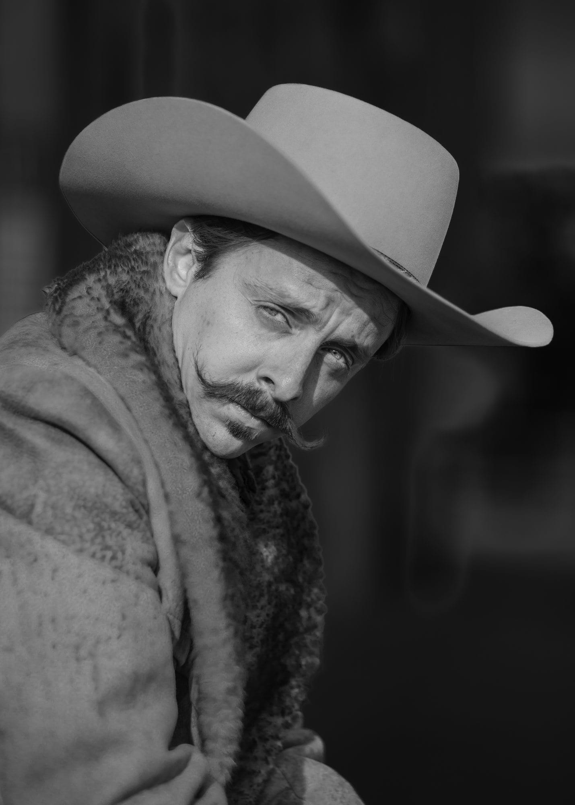
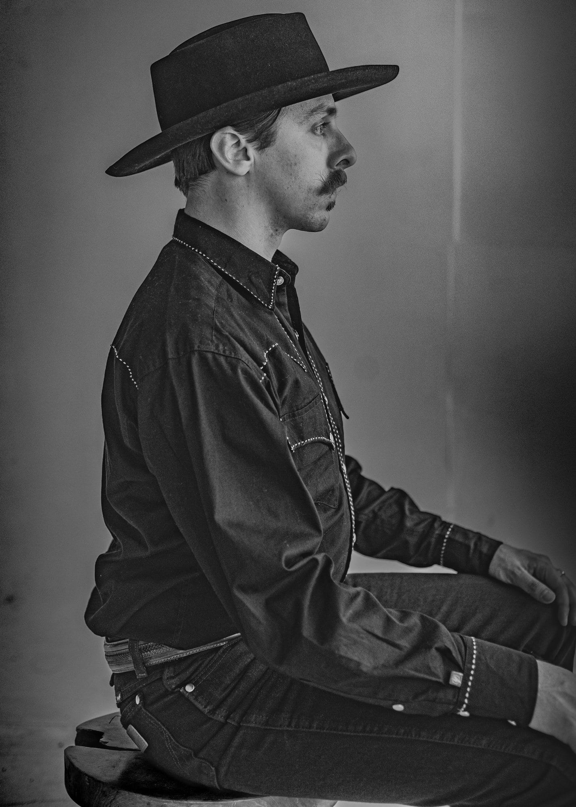
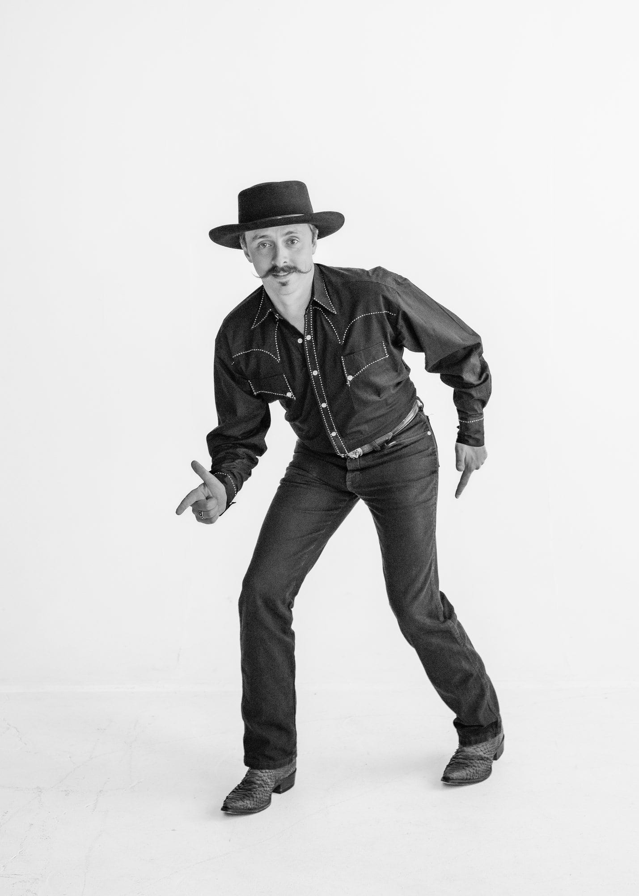
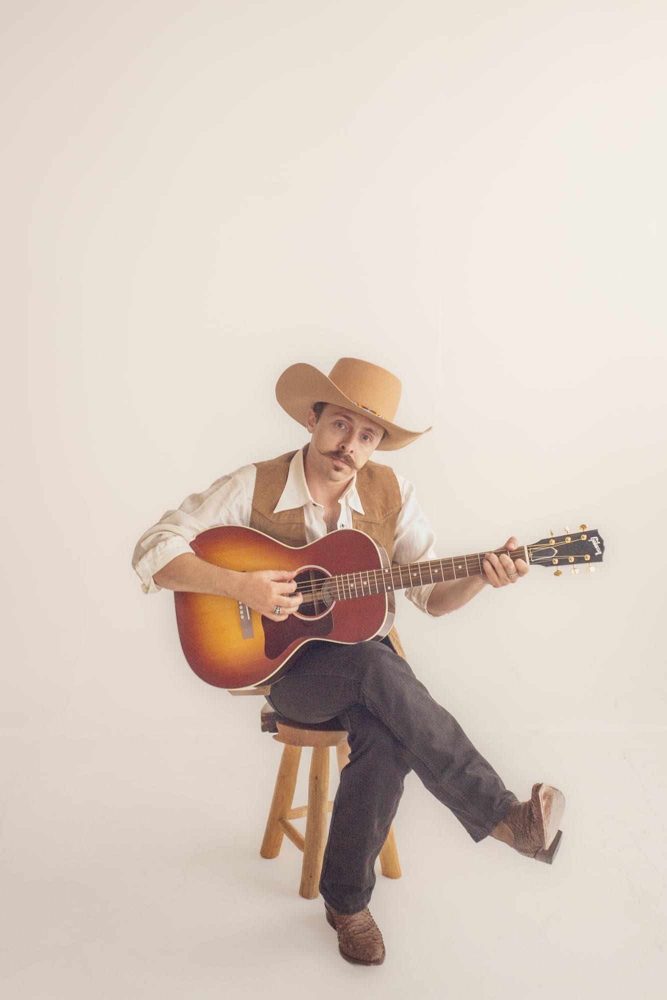
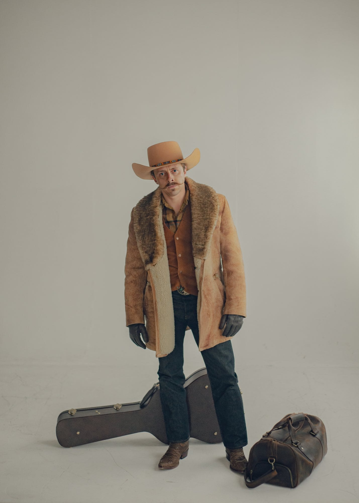
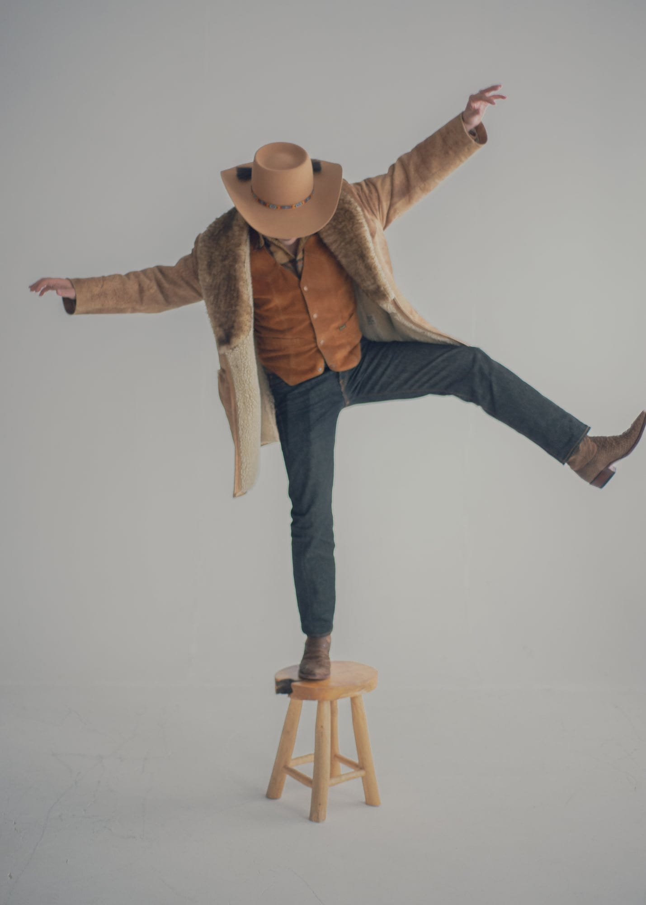
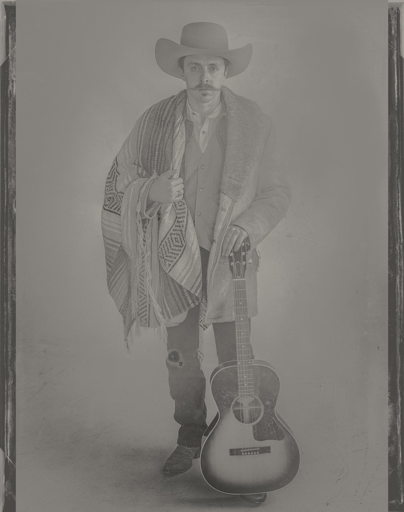

Thomas Owen
Thomas Owen is an outlaw Americana singer-songwriter who isn't afraid to play in the shadow of the psyche, and the music is dark, mysterious and emotional. We carried that with old-style plate photos, a shearling coat, black and white and deep shadow under a hat brim.







